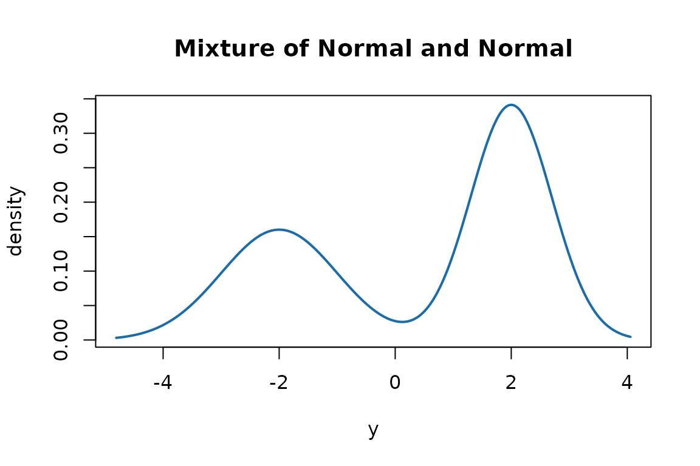
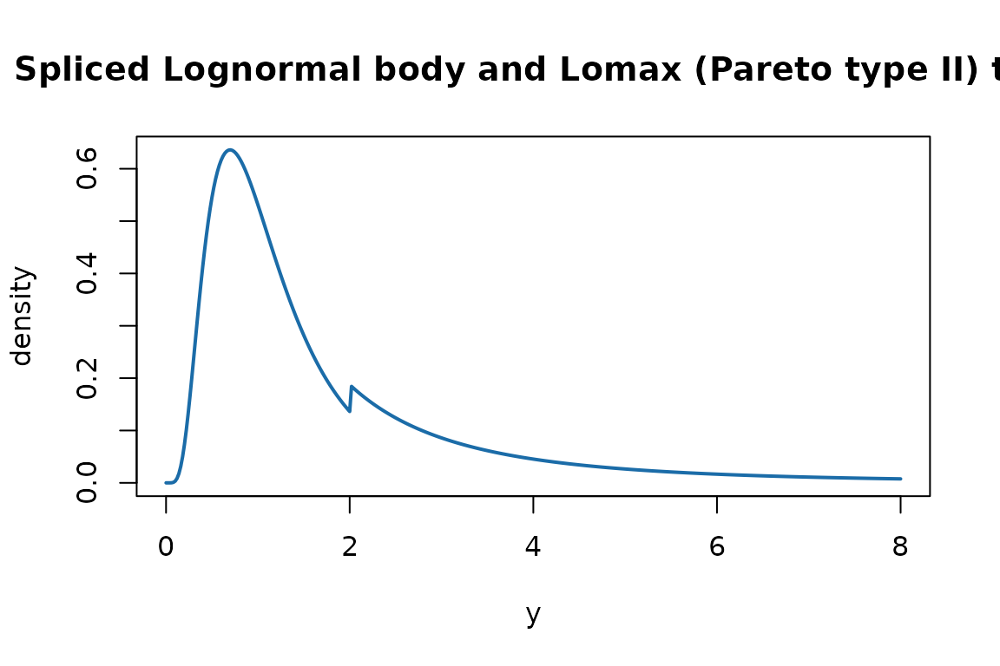

An operator takes one or more families and returns a new family. The
result is an ordinary family: it works in distribution(),
in regcomp() (every parameter can take a formula) and, when
its parts have Stan code, in the Bayesian engine. Parameters of a single
base keep their names; parameters of several components get a suffix
(mu.1, mu.2, or .b and
.t for the body and tail of a spliced law).
Point masses and lattices
Every family states how it carries probability. A discrete law lives on a lattice (the integers for counts, multiples of 0.1 for a law rounded to one decimal); a continuous law has a density and may also have point masses (atoms), as a zero inflated gamma has at zero. Operators use this contract: they add atoms where they should, keep the lattice of their base, refuse inflation points off the lattice, and refuse combinations that have no well defined density.
Inflation and hurdles
inflate() adds point masses at one or several values.
For a count base the inflated value keeps its base probability as well;
for a continuous base it becomes an atom.
zip <- inflate("poisson")
d <- distribution(zip, lambda = 2, zi = 0.3)
prob(d, 0:3)
#> [1] 0.3947347 0.1894694 0.1894694 0.1263129
mean(d)
#> [1] 1.4
zoib <- inflate("beta", at = c(0, 1)) # zero and one inflated beta
names(zoib$pars)
#> [1] "mu" "phi" "pi1" "pi2"
db <- distribution(zoib, mu = 0.4, phi = 5, pi1 = 0.1, pi2 = 0.05)
prob(db, c(0, 1)) # the two atoms
#> [1] 0.10 0.05
try(inflate("poisson", at = 0.5)) # not on the integer lattice
#> Error in inflate("poisson", at = 0.5) :
#> Inflation points of a discrete law must lie on its lattice (integers for counts).hurdle() replaces the probability at the hurdle value:
the base law is truncated away from it and the hurdle probability is a
parameter.
hnb <- hurdle("nb2")
prob(distribution(hnb, mu = 3, phi = 1, hu = 0.1), 0:3)
#> [1] 0.1000000 0.2250000 0.1687500 0.1265625
zag <- hurdle("gamma") # zero adjusted gamma
pz <- distribution(zag, mu = 2, sigma = 0.5, hu = 0.2)
c(prob(pz, 0), cdf(pz, 0), mean(pz))
#> [1] 0.2 0.2 1.6Truncation, censoring, discretizing and rounding
ztp <- truncate_dist("poisson", lower = 1) # zero truncated Poisson
prob(distribution(ztp, lambda = 1.5), 0:3)
#> [1] 0.0000000 0.4308254 0.3231190 0.1615595
tobit <- censor("normal", lower = 0) # atom at the censoring point
prob(distribution(tobit, mu = 0.5, sigma = 1), c(0, 1))
#> [1] 0.3085375 0.3520653
dg <- discretize("gamma") # P(Y = k) = F(k + 1) - F(k)
sum(prob(distribution(dg, mu = 3, sigma = 0.5), 0:200))
#> [1] 1
r1 <- round_dist("normal", digits = 1) # lattice of multiples of 0.1
prob(distribution(r1, mu = 0, sigma = 0.2), c(0, 0.1, 0.05))
#> [1] 0.1974127 0.1746663 0.0000000A discretized or rounded law keeps the mass of its tails, so the masses sum to one even for far tails.
Finite mixtures
mixture() takes two or more components. The weights of
components 2 to K are on the multinomial logit scale relative to the
first component.
mx <- mixture("normal", "normal")
d <- distribution(mx, mu.1 = -2, sigma.1 = 1, mu.2 = 2, sigma.2 = 0.7, w2 = 0.4)
plot(d)
m3 <- mixture("poisson", "poisson", "poisson")
names(m3$pars)
#> [1] "lambda.1" "lambda.2" "lambda.3" "w2" "w3"Components must share a lattice; a mixture of a count law and a law with atoms keeps the atoms.
Convolutions, splicing and copulas
convolve_dist() gives the law of a sum of two
independent variables. When one of them has point masses at known places
(a zero inflated or hurdle law) the density of the sum is the continuous
part plus the shifted atoms; when both have, the sum also has point
masses at the sums of their locations.
emg <- convolve_dist("normal", "exponential") # exponentially modified Gaussian
prob(distribution(emg, mu.1 = 0, sigma.1 = 1, lambda.2 = 2), c(0, 1, 2))
#> [1] 0.3362040 0.3173105 0.1353353
pp <- convolve_dist("poisson", "poisson")
all.equal(prob(distribution(pp, lambda.1 = 1.5, lambda.2 = 2.2), 0:5), dpois(0:5, 3.7))
#> [1] TRUE
zz <- convolve_dist(inflate("gamma"), censor("normal", lower = 0))
prob(distribution(zz, mu.1 = 2, sigma.1 = 0.5, zi.1 = 0.3, mu.2 = 0.2, sigma.2 = 1), 0) # 0.3 * P(N < 0)
#> [1] 0.1262221splice() joins a body law below a threshold with a tail
law above it; copula_dist() builds a bivariate law from two
margins and a Gaussian, Clayton, Gumbel or Frank copula. Margins may be
continuous, discrete, or continuous with point masses, and need not be
of the same type: at a jump of a margin the copula is differenced across
the jump.
sp <- splice("lognormal", "lomax")
plot(distribution(sp, mu.b = 0, sigma.b = 0.6, scale.t = 2, alpha.t = 2.5,
threshold = 2, w = 0.7), xlim = c(0, 8))
cp <- copula_dist("normal", "gamma", "clayton")
names(cp$pars)
#> [1] "mu.1" "sigma.1" "mu.2" "sigma.2" "theta"
dc <- distribution(cp, mu.1 = 0, sigma.1 = 1, mu.2 = 2, sigma.2 = 0.5, theta = 2)
log_prob(dc, cbind(0.2, 1.5))
#> [1] -1.639693
hc <- copula_dist("poisson", inflate("gamma"), "frank") # a count and a zero inflated amount
log_prob(distribution(hc, lambda.1 = 2, mu.2 = 2, sigma.2 = 0.5, zi.2 = 0.3, theta = 3), rbind(c(1, 0), c(1, 2.5)))
#> [1] -2.160720 -3.496421Every other operator also accepts a law with point masses: truncation
keeps the atoms inside [lower, upper] and rescales them,
censoring adds the tail mass to the bounds, rounding puts each atom in
its bin, monotone transformations move the atoms, splicing keeps the
body atoms below the threshold and the tail atoms above it, and CDF
generators give an atom at c the mass
T(G(c)) - T(G(c-)).
zg <- inflate("gamma")
prob(distribution(truncate_dist(zg, 0, 3), mu = 2, sigma = 0.5, zi = 0.3), 0)
#> [1] 0.3355114
prob(distribution(round_dist(zg), mu = 2, sigma = 0.5, zi = 0.3), 0:2)
#> [1] 0.3132917 0.2336460 0.2675442
prob(distribution(exponentiated(zg), mu = 2, sigma = 0.5, zi = 0.3, a = 2), 0)
#> [1] 0.09Cure models, compounding, weighting and transformations
cw <- cure("weibull") # S(t) = cure + (1 - cure) S0(t)
survival(distribution(cw, shape = 1.5, scale = 2, cure = 0.3), c(1, 10, 100))
#> [1] 0.7915320 0.3000098 0.3000000
nb <- compound("poisson", "lambda", "gamma_rate") # Poisson mixed over a gamma rate
names(nb$pars)
#> [1] "shape_mix" "rate_mix"
lb <- weighted("birnbaum_saunders") # length biased law, density y f(y) / E(Y)
cg <- contaminated("gamma", par = "sigma") # a fraction delta with sigma inflated by eta
names(cg$pars)
#> [1] "mu" "sigma" "delta" "eta"
ln <- transform_dist("normal", "exp") # the lognormal law
all.equal(prob(distribution(ln, mu = 0, sigma = 1), 1), dlnorm(1))
#> [1] TRUE
we <- wrap("exponential") # wrapped onto the circle
prob(distribution(we, lambda = 0.8), c(-1, 0.5, 2))
#> [1] 0.01175932 0.53979788 0.16258400
qw <- quantile_param("weibull", par = "scale", tau = 0.5) # regress the median
names(qw$pars)
#> [1] "q" "shape"
quantile(distribution(qw, q = 3, shape = 2), 0.5)
#> [1] 3quantile_param() replaces a parameter by a quantile of
the law, so a regression on q is a parametric quantile
regression.
Skewing
sl <- skew_symmetric("logistic", "logistic")
names(sl$pars)
#> [1] "mu" "sigma" "alpha"
ssvm <- sine_skew("von_mises") # sine skewed circular law
names(ssvm$pars)
#> [1] "mu" "kappa" "lambda"Generated families
Generators build the families of the distribution literature from a
baseline G through F(y) = T(G(y)). New shape
parameters are appended to the baseline parameters and can take
formulas.
| Generator | T(u) |
|---|---|
exponentiated() |
u^a |
kumaraswamy_g() |
1 - (1 - u^a)^b |
beta_g() |
regularized incomplete beta I_u(a, b)
|
mcdonald_g() |
I_{u^c}(a, b) |
exp_generalized_g() |
(1 - (1 - u)^a)^b |
marshall_olkin() |
u / (alpha + (1 - alpha) u) |
transmuted() |
(1 + lambda) u - lambda u^2 |
record_transmuted() |
u + p (1 - u) log(1 - u) |
odd_log_logistic() |
u^a / (u^a + (1 - u)^a) |
odd_burr() |
1 - (1 + (u / (1 - u))^a)^(-b) |
weibull_g() |
1 - exp(-a (u / (1 - u))^b) |
gamma_g() |
Zografos and Balakrishnan, or Ristic and Balakrishnan |
topp_leone_g() |
(u (2 - u))^a |
sine_g() |
sin(pi u / 2) |
harris_g(), lindley_g()
|
Harris extended and Lindley generators |
dus(), km()
|
(e^u - 1) / (e - 1) and
e (1 - e^(-u)) / (e - 1)
|
power_series_max(),
power_series_min()
|
maximum or minimum of a power series number of draws |
kw <- kumaraswamy_g("weibull")
names(kw$pars)
#> [1] "shape" "scale" "a" "b"
bw <- beta_g("weibull")
cdf(distribution(bw, shape = 1.5, scale = 2, a = 2, b = 0.5), 1)
#> [1] 0.03725503
gens <- list(exponentiated("exponential"), mcdonald_g("exponential"), exp_generalized_g("exponential"),
marshall_olkin("exponential"), transmuted("exponential"), record_transmuted("exponential"),
odd_log_logistic("exponential"), odd_burr("exponential"), weibull_g("exponential"),
gamma_g("exponential"), topp_leone_g("exponential"), sine_g("exponential"),
harris_g("exponential"), lindley_g("exponential"), dus("exponential"), km("exponential"),
power_series_max("exponential", "poisson"), power_series_min("exponential", "geometric"))
data.frame(family = vapply(gens, `[[`, "", "display_name"),
parameters = vapply(gens, function(f) paste(names(f$pars), collapse = ", "), ""))
#> family parameters
#> 1 Exponentiated Exponential lambda, a
#> 2 McDonald (GB1) Exponential lambda, a, b, c
#> 3 Exponentiated generalized Exponential lambda, a, b
#> 4 Marshall-Olkin Exponential lambda, alpha
#> 5 Transmuted Exponential lambda, lambda_
#> 6 Record-based transmuted Exponential lambda, prob
#> 7 Odd log-logistic Exponential lambda, a
#> 8 Odd Burr XII Exponential lambda, a, b
#> 9 Weibull Exponential lambda, a, b
#> 10 Gamma (Zografos-Balakrishnan) Exponential lambda, a
#> 11 Topp-Leone Exponential lambda, a
#> 12 Sine Exponential lambda
#> 13 Harris extended Exponential lambda, theta, k
#> 14 Lindley Exponential lambda, theta
#> 15 DUS transformed Exponential lambda
#> 16 Kavya-Manoharan transformed Exponential lambda
#> 17 poisson maximum (power series) of Exponential lambda, theta
#> 18 geometric minimum (power series) of Exponential lambda, thetaA generated family is fitted like any other:
y <- rweibull(300, shape = 1.5, scale = 2)
fk <- regcomp(y ~ 1, family = marshall_olkin("weibull"), data = data.frame(y = y))
coef(fk)
#> shape:(Intercept) scale:(Intercept) alpha:(Intercept)
#> 0.4447104 0.5369417 0.4316568Custom families
custom_family() registers a law from its log density.
The total mass is checked numerically at the parameter values given in
check; cdf, quantile, rng and moments are optional and fall
back to numerical methods.
myexp <- custom_family("my_exponential", list(par_spec("rate", "positive", role = "rate")),
lpdf = function(y, p) dexp(y, p$rate, log = TRUE),
support = function(p) list(lower = 0, upper = Inf), check = list(rate = 2))
coef(regcomp(y ~ 1, family = myexp, data = data.frame(y = rexp(200, 2))))
#> rate:(Intercept)
#> 0.7390299
quantile(distribution(myexp, rate = 2), 0.5)
#> [1] 0.3465736What is refused
Operators refuse combinations whose result is not well defined, instead of returning a wrong answer:
- convolution, censoring or a monotone transformation of a law whose
point masses are at unknown places (a custom family with an
atomfunction but noatom_points), since the result’s masses cannot be located; - a mixture of discrete laws on different lattices;
- inflation or hurdle points that are not on the lattice of a discrete base.
Stan code is generated for operators whose parts have Stan code,
including a single inflation or hurdle point on a continuous law; an
operator applied to a law that already has point masses (truncation,
censoring or a copula of a zero inflated gamma, for example) is fitted
by the "ml" and "tmb" engines only.
family_capabilities() reports what is available for a given
family.
family_capabilities(hurdle("poisson"))$stan
#> [1] "generated"
family_capabilities(inflate("gamma"))$stan
#> [1] "generated"
family_capabilities(truncate_dist(inflate("gamma"), 0, 5))$stan
#> [1] "unavailable"